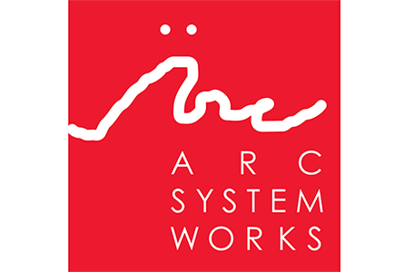
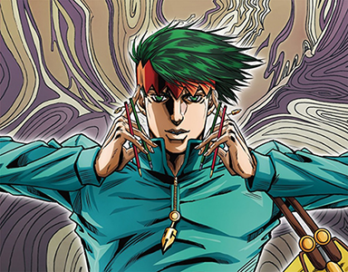
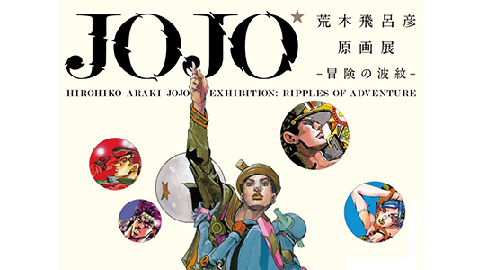
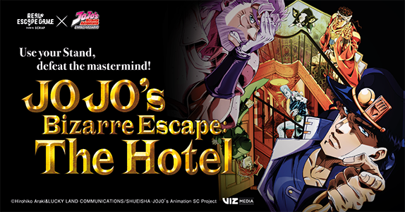

20 de Mayo de 2018, 5:32 PM
Arc System Works, creadores del reciente Dragon Ball FighterZ y títulos de la talla de Guilty Gear Xrd o la saga BlazBlue, podría estar pensando ya en qué nuevo manga adaptar al mundo del videojuego. La propuesta de los fans es crear un título al estilo de FighterZ: con mecánicas de lucha en 2.5D y uno de los candidatos es la saga Jojo's Bizarre Adventure.
18 de Mayo de 2018, 7:04 PM
Warner Bros Japón ha colgado un nuevo teaser de la futura segunda OVA basada en el manga 'Kishibe Rohan wa Ugokanai' y realizada por David Production. Después de tanta espera, parece ser que la fecha de lanzamiento está prevista para el 19 de julio.
14 de Mayo de 2018, 3:40 PM
Nuestra queridísima saga celebrará este año, por fin, su trigesimo cumpleaños. ¿Cómo? Con una exposición en el Centro nacional de las artes de Tokyo. Esta hermosa puesta en escena está planeada para muy pronto e incluirá una gran variedad compuesta por la mejor selección del trabajo de Hirohiko Araki.
2 de Mayo de 2018, 1:34 AM
Las compañias de eventos inmersivos coopera con FanimeCon y Anime Expo para llevar Jojo's Bizarre Escape: The Hotel a la audiencia estadounidense. Los fans podrán sentirse parte del grupo de Stardust Crusaders mientras exploran un hotel laberíntico y usan sus stands para derrotar a DIO.